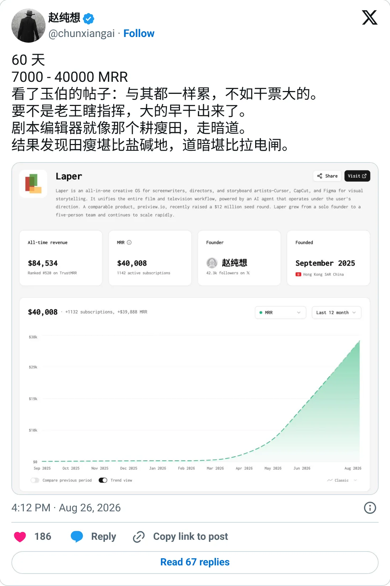

Not a pick
Laper
The ledger looks real. It is not one of the clearer things to start next.
$40.1K MRR
Should you build this
The money looks real, and it is still not a recommendation to start a copy. Laper's founder posted a 60-day jump from $7,000 to $40,000 MRR on August 26, 2026. TrustMRR on October 8 reads $40.1K MRR, so the destination matches the processor even though the chart's earlier points are monthly totals rather than a long MRR history. A six-week quadrupling is exactly the window where annual plans and a launch spike get called recurring. The $40.1K is real billing. Durability is unproven.
Cited from the captured posts, shown below: the key post (Aug 26, 2026) is the source for “Founder: "60 days: $7,000 → $40,000 MRR"”.
Posts this is based on

Founder: "60 days: $7,000 → $40,000 MRR"
Open on X
What the product is
All-in-one AI creative OS for screenwriters, directors and storyboard artists ("Cursor, CapCut and Figma for visual storytelling"). Hong Kong, founded Sep 2025.
Public trail
- $760Verified revenue in Dec 2025 (first month tracked) source
- $294Verified revenue in Jan 2026 source
- $1.3KVerified revenue in Mar 2026 source
- $595Verified revenue in Apr 2026 source
- $5.1KVerified revenue in May 2026 source
- $15.9KVerified revenue in Jun 2026 source
- •Founder: "60 days: $7,000 → $40,000 MRR" source
- $46KVerified revenue in Aug 2026 source
- $46.1KVerified revenue in Sep 2026 (latest full month) source